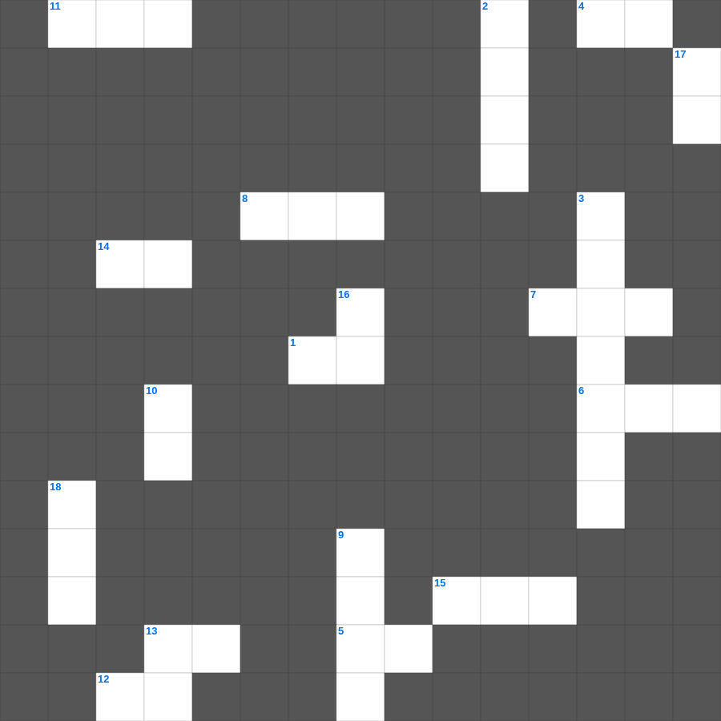

에스라: 성전 재건
📌 서비스 정의
십자가로세로는 교회 주보와 주일학교에서 사용할 수 있는 성경 기반 가로세로 퍼즐 서비스입니다. 성경 인물, 사건, 핵심 구절을 바탕으로 제작되었습니다. 온라인 풀이 및 인쇄 기능을 제공합니다.
📖 에스라란?
에스라는 바벨론 포로에서 돌아온 이스라엘 백성이 성전을 재건하고, 학사 에스라가 율법을 가르치며 신앙 공동체를 회복하는 과정을 기록합니다.
📚 에스라의 주요 사건·주제
1차 포로 귀환 · 성전 재건의 시작과 중단 · 성전 재건 완성 · 에스라의 귀환과 율법 교육 · 이방 결혼 문제 개혁
오늘은 에스라의 주요 내용을 담은 에스라 성경 퀴즈 문제를 준비했습니다. 총 20개의 힌트가 있으며, 주일학교 교재나 성경공부 자료로 활용하기 좋습니다. 무료로 즐기는 에스라 가로세로 퍼즐을 지금 바로 풀어보세요!

📝 가로 힌트
1. 에스라가 백성에게 가르친 것
4. 다리오 왕의 조서
5. 이방 아내를 버리게 한 말씀
6. 성전 재건을 허락한 왕
7. 에스라가 세운 제사장
8. 제칠월에 지킨 절기
11. 아닥사스다 왕의 서기관
12. 에스라가 금식하며 구한 것
13. 성전 기초를 놓을 때 외친 소리
14. 에스라가 가져온 금과 은
15. 바벨론 포로를 해방한 왕
📝 세로 힌트
2. 고레스의 조서에 나온 말
3. 바사 왕 아닥사스다
6. 다리오 왕이 성전 건축을 허락한 왕
9. 1차 귀환 인원
10. 다리오 왕의 조서로 성전 완공
13. 성전 기초 놓은 날의 환호
16. 에스라가 바벨론에서 가져온 것
17. 초막절을 지킨 날
18. 예수아와 스룹바벨
🧩 이 퍼즐에서 배우는 내용
이 퍼즐은 에스라: 성전 재건의 핵심 단어와 개념을 자연스럽게 복습할 수 있도록 구성되었습니다. 주일학교 수업이나 개인 성경공부에서 학습 내용을 점검하는 용도로 바로 활용할 수 있습니다.
🧑🏫 교회 교육 자료 활용
이 퍼즐은 주일학교 교재 추천 자료로 활용할 수 있고, 주일학교 주보에 넣기 좋은 분량으로 구성되어 있습니다. 수업용 주일학교 교안에 활동지로 붙이거나, 예배 후 복습용 주일학교 공과교재로 바로 사용할 수 있습니다.
🏷️ 키워드
에스라 성경 퀴즈 문제, 에스라, 십자가로세로, 성경퀴즈, 말씀퀴즈, 가로세로퍼즐, 주일학교 교재 추천, 주일학교 주보, 주일학교 교안, 주일학교 공과교재